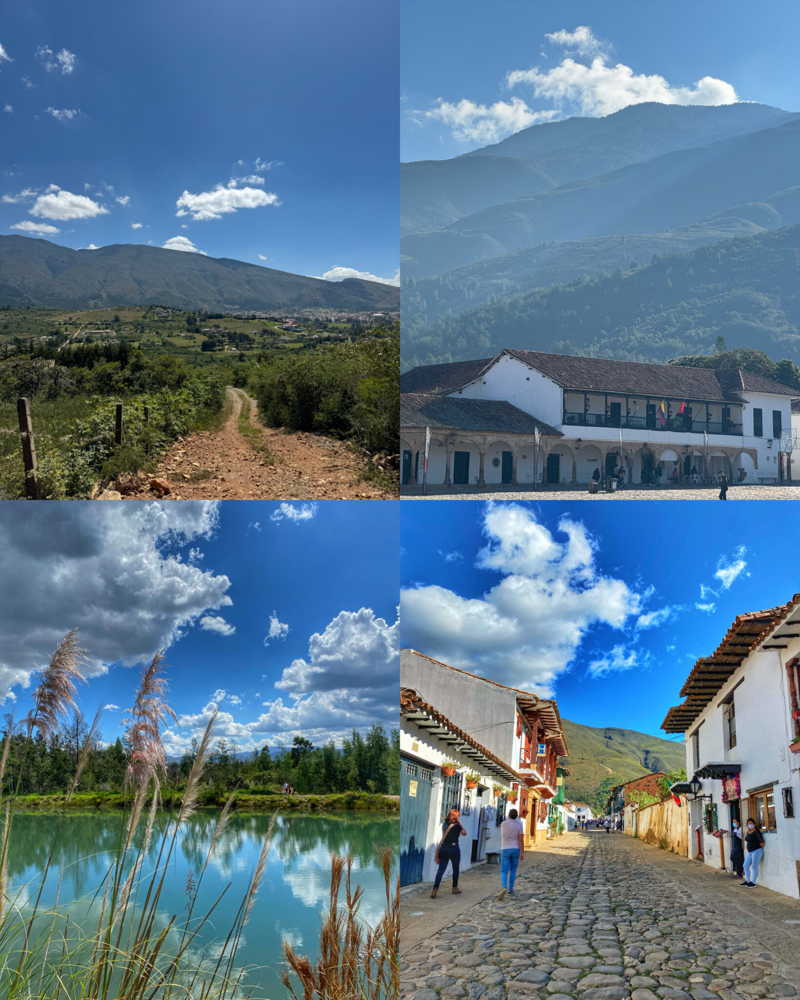
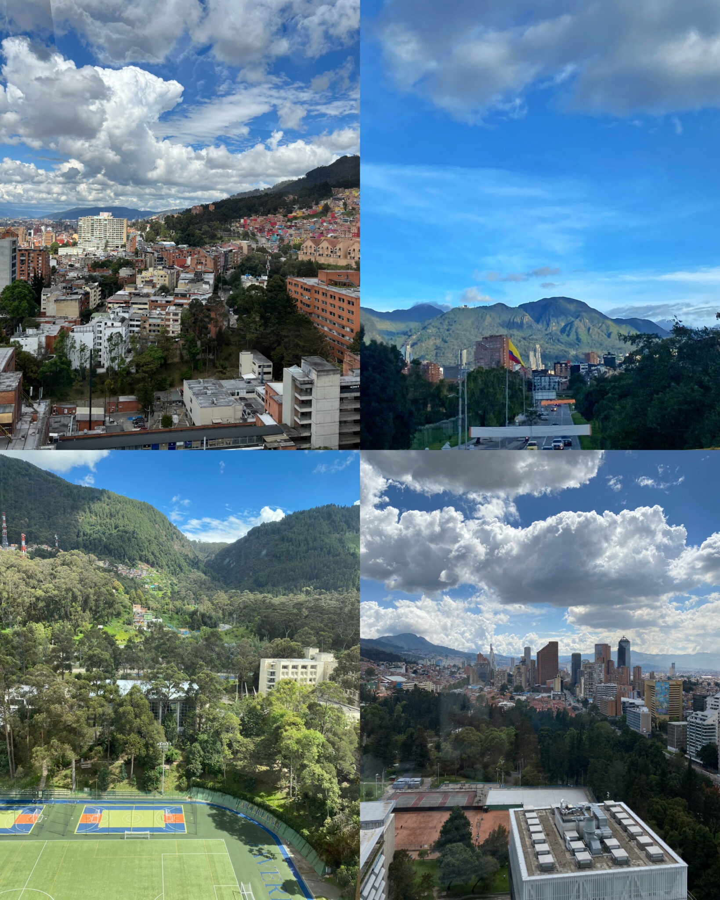
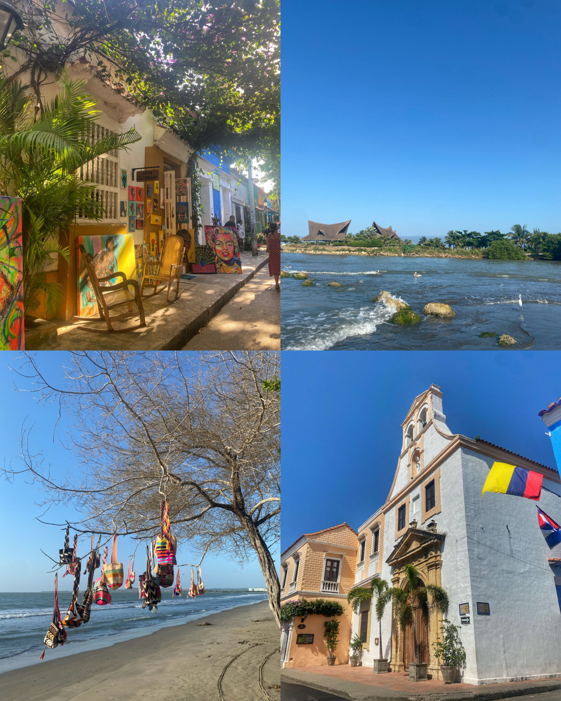
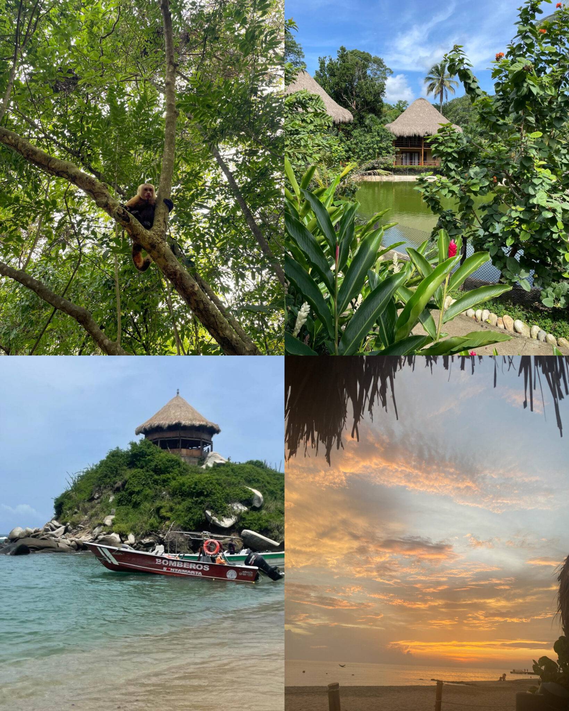
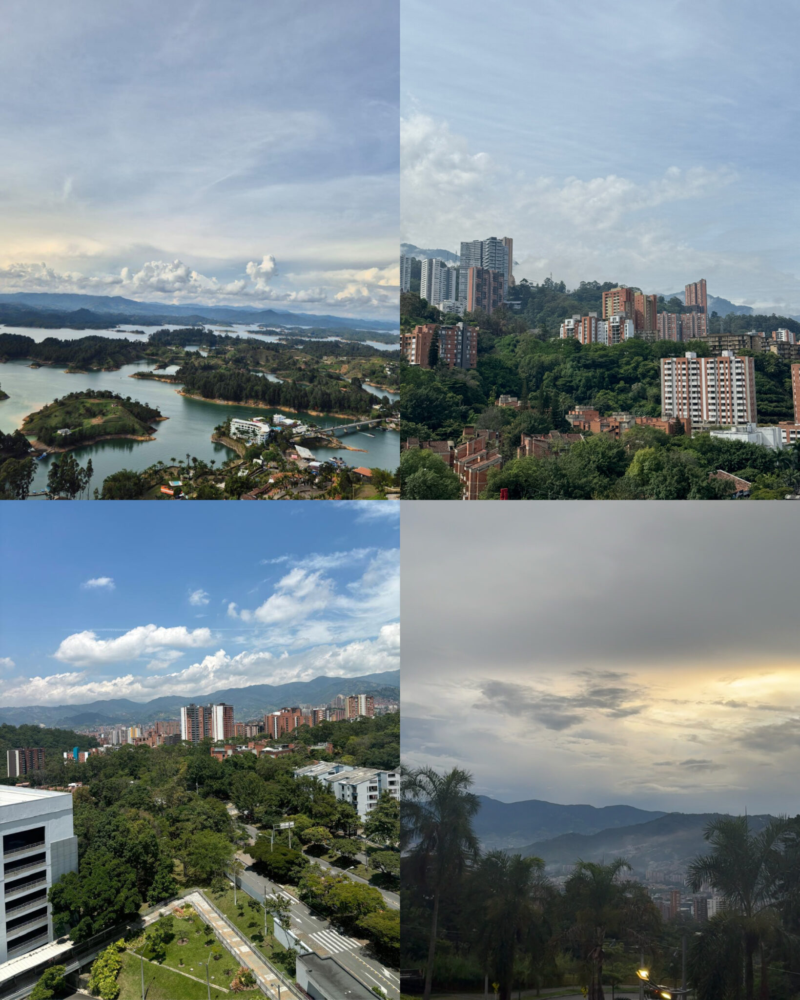
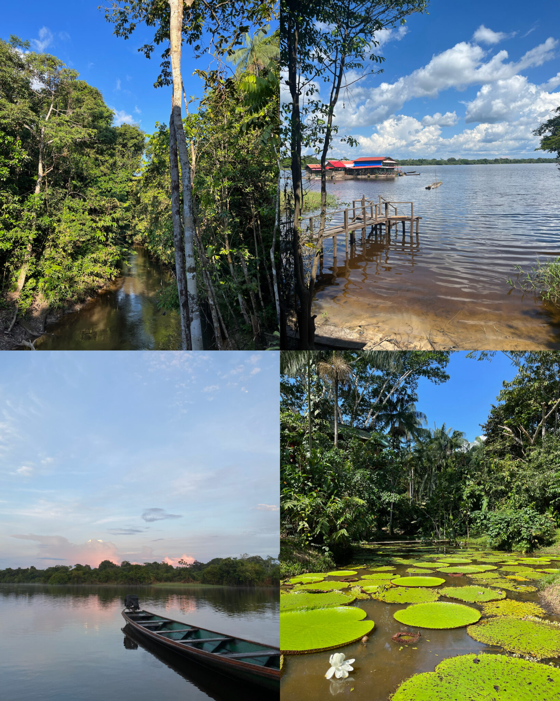

Visit Colombia
We are thrilled to welcome you to Villa de Leyva, Colombia!
Most will arrive in the capital city, Bogotá, and from there we will take a scenic bus ride to the enchanting town where our wedding will take place. While our wedding festivities will take place in a beautiful location, we encourage you to explore more of Colombia if time allows.
In addition to providing information about the places you’ll be visiting with us, we’ve also included recommendations for other destinations. Colombia has so much to offer, and we hope you have the chance to experience more of its diverse and breathtaking locales!
Villa de Leyva
Villa de Leyva is a charming colonial town located in the heart of Colombia, known for its stunning beauty and rich history. We hope you are captivated by the well-preserved cobblestone streets, white-washed buildings, and the town’s central square, which is one of the largest in South America.
Here, you can immerse yourself in the town’s colonial past, with structures dating back to the 16th century, including the Casa de Nariño, where the first president of Colombia was born. The town also has numerous art galleries, shops, and restaurants that offer a taste of local and international cuisine.
Surrounded by beautiful countryside and desert landscapes, Villa de Leyva is the perfect destination for outdoor enthusiasts. You can explore the nearby Iguaque National Park, visit the iconic El Fósil museum, or simply enjoy a leisurely walk through the picturesque streets.
The weather is very consistent. Average low temperatures range from 10°C to 12°C (50°F to 55°F), while daytime highs typically range from 18°C to 24°C (65°F to 75°F). The weather changes throughout the day, so plan for sun, clouds, and rain every day.
Bogotá
Bogotá, the vibrant capital of Colombia, is a city that offers a captivating blend of rich history, cultural diversity, and breathtaking natural landscapes.
As you explore this high-altitude metropolis nestled in the Andes Mountains, you’ll be greeted by a plethora of experiences. We recommend you take a few days (if you can) to explore all it has to offer. You can begin your journey in La Candelaria, the historic heart of the city, with its charming colonial architecture, colorful facades, and bustling markets. Don’t miss the Gold Museum, housing an unparalleled collection of pre-Columbian gold artifacts, and the Botero Museum, housing hundreds of “cherubic” works by the famous artist.
Bogotá also boasts an exciting culinary scene with a wide range of traditional Colombian dishes and international cuisine. For panoramic views of the city, visit Monserrate, a mountaintop sanctuary. The city’s dynamic street art scene and numerous parks and green spaces, like Simón Bolívar Park, add to its charm. With its friendly locals and a lively atmosphere, Bogotá is a destination that promises a memorable and authentic Colombian experience.
In Bogotá, the average low temperatures range from 7°C to 10°C (45°F to 50°F), while daytime highs typically range from 14°C to 19°C (57°F to 66°F). The city experiences two main seasons: a dry season from December to March and July to August, and a rainy season from April to June and September to November. Due to its high altitude, Bogotá’s weather can change quickly, so it’s a good idea to dress in layers and be prepared for variations.
Cartagena
Nestled along the Caribbean coast, Cartagena stands as a pristine example of Spanish colonial architecture and is recognized as a UNESCO World Heritage site. The city’s walled center, characterized by vibrant facades, winding cobblestone streets, and charming plazas, transports visitors to a bygone era. For panoramic views, the Castillo San Felipe de Barajas is a must-visit, and the nearby Rosario Islands offer idyllic beaches and crystal-clear waters for a relaxing coastal experience.
Santa Marta
Situated on the Caribbean coast, Santa Marta offers a harmonious blend of history, nature, and beachfront allure. Serving as a gateway to the Sierra Nevada de Santa Marta, the city offers the exhilarating Lost City (Ciudad Perdida) trek, leading hikers through lush landscapes to discover ancient archaeological marvels. Additionally, the nearby Tayrona National Natural Park entices sun-seekers and nature enthusiasts alike with pristine beaches, coral reefs, and diverse ecosystems.
Medellín
Medellín has undergone a remarkable transformation, emerging as a symbol of urban revitalization. Surrounded by lush mountains, the city showcases innovative urban projects like the Metrocable, providing breathtaking views of the valley. Medellín’s cultural scene, highlighted by the Plaza Botero with its collection of Fernando Botero’s sculptures, reflects the city’s vibrant artistic renaissance. It is also known for its excellent public transportation system which includes both subways and gondolas.
The Amazon Rainforest
Colombia boasts a portion of the expansive Amazon rainforest, accessible through Leticia in the Amazonas Department. Serving as a gateway to this pristine wilderness, Leticia offers jungle excursions, opportunities to explore indigenous communities, and a chance to witness unique wildlife. The region is a haven for eco-tourism enthusiasts seeking an immersive experience in one of the Earth’s most biodiverse ecosystems. Leticia is one of Gabi’s favorite places in the world, as the birds from the Amazon exhibit an unusual flocking behavior unlike anywhere else.
Visitar Colombia
Si vives aquí, ya sabes 😊